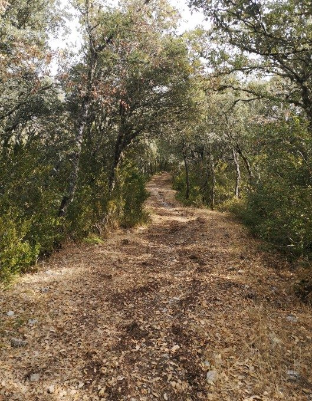
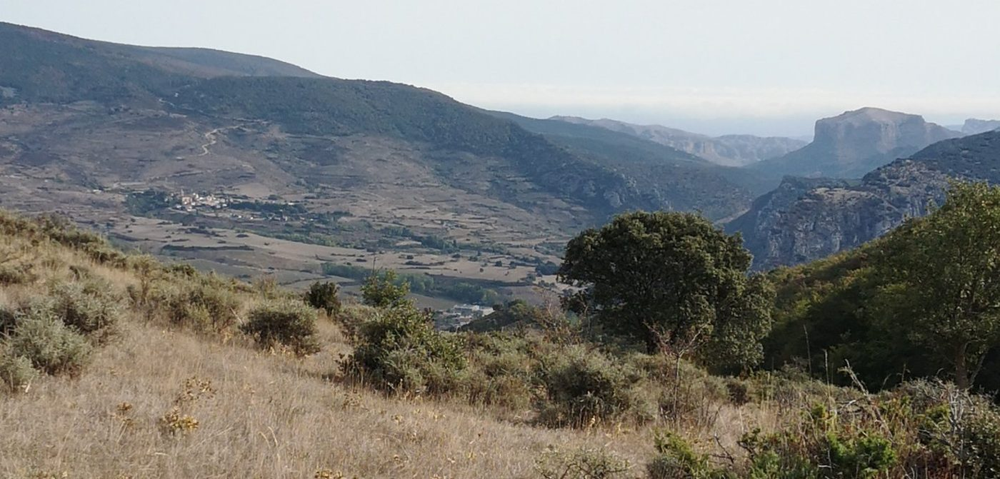

Paso Cocucha
Torrecilla en Cameros · comarca del Iregua
- Distancia8,5 km
- Desnivel456 m
- Tiempo orientativo3 h
- Dificultadmedia
- Época recomendadaprimavera y otoño
- Terrenocamino y senda
Este “Lugar con encanto” nos permite disfrutar de uno de los muchos hermosos paseos que el entorno de Torrecilla en Cameros puede ofrecernos.
Además, el Paso Cocucha nos dará acceso a un precioso valle escondido en el que encontramos una espectacular dolina, tupidos bosquetes de boj y algunos antiguos corrales abandonados.
Para completar el menú; bosques de quejigos, praderas sin fin, y espectaculares vistas, tanto hacia el norte, con Nestares, el Serradero y el Castillo de Viguera y también hacia el sur, Sierra de Cebollera y Cabezo del Santo.




Recorrido
Ascendemos por las calles de Torrecilla hacia el mirador del Sagrado Corazón. Después empezamos a seguir las indicaciones hacia la Cueva Lóbrega, lo que hará que enseguida dejemos a la derecha el sendero de la Ermita de San Pedro.
Cruzamos un puente sobre el arroyo San Pedro y comenzamos a ascender por un camino ancho salpicado de boj y otros matorrales.
Pronto llegamos a una bifurcación en la que nos desviamos a la izquierda para seguir las indicaciones hacia la Cueva Lóbrega. A este mismo punto regresaremos en el trayecto de vuelta.
El entorno es bastante cerrado hasta que, tras un suave giro a la derecha, la vista se despeja y disfrutamos, hacia el norte, de lejanas vistas sobre Nestares y el castillo de Viguera.
Seguimos por un camino muy evidente, cuya pendiente aumenta por momentos. Se trata del antiguo camino entre Torrecilla y Nieva de Cameros.
Tras un tramo empinado contemplamos, al sur, espectaculares vistas sobre la Sierra de Cebollera.
Es el momento de abandonar el camino principal y desviarnos ligeramente a la derecha para tomar un sendero a media ladera que avanza hacia el comienzo de una zona boscosa.
Entramos en un precioso bosque de quejigos y el sendero, encajado en la piedra, nos lleva de nuevo en ascenso hasta nuestro objetivo del día: el Paso Cocucha.
Descendemos apenas unos metros por el bosque y enseguida salimos a un terreno abierto, donde contemplamos un paisaje totalmente nuevo, ya que el Paso Cocucha nos ha llevado, sin advertirlo, a otra vertiente de la montaña.
A partir de aquí descendemos prestando bastante atención al entorno, ya que el sendero no es evidente y a menudo nos lleva a atravesar barreras de vegetación que parecen cerrarnos el paso. Más abajo rodeamos una dolina (un hundimiento del terreno) y seguimos perdiendo altura caminando por un terreno salpicado de arbustos hacia una masa boscosa cercana a unos corrales derruidos.
Poco a poco nos adentramos de nuevo en el bosque y el sendero vuelve a ser evidente, descendiendo en zigzag en busca del cauce de un arroyo.
Enseguida desembocamos en un camino que continúa en descenso y, más abajo, llegamos a la bifurcación por la que pasamos a la ida. Desde allí, regresamos por el mismo camino que ya conocemos hasta Torrecilla.